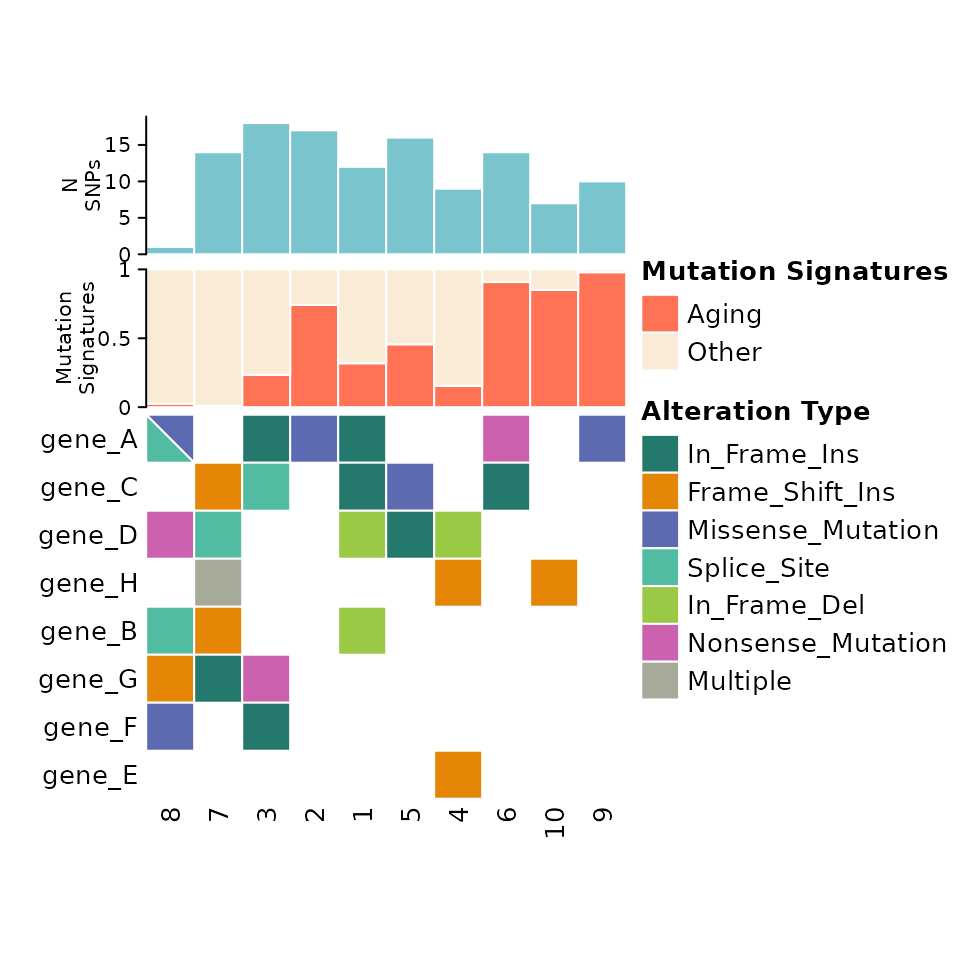
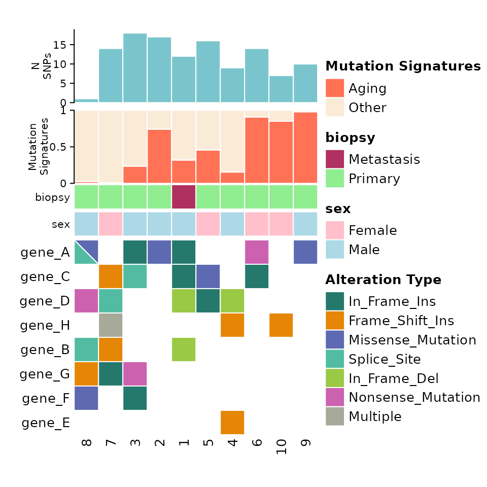
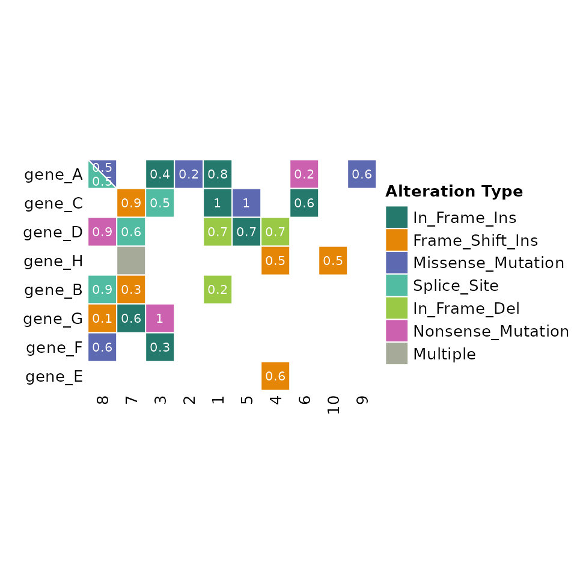
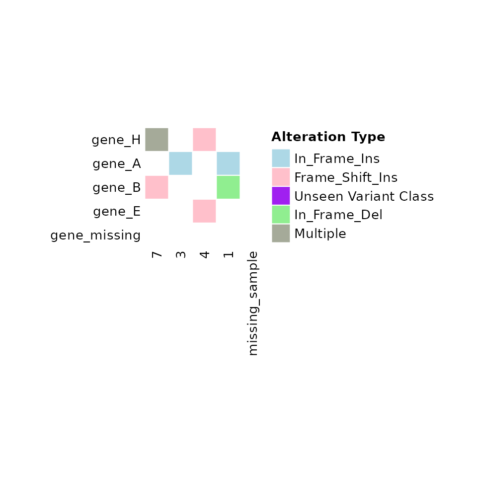
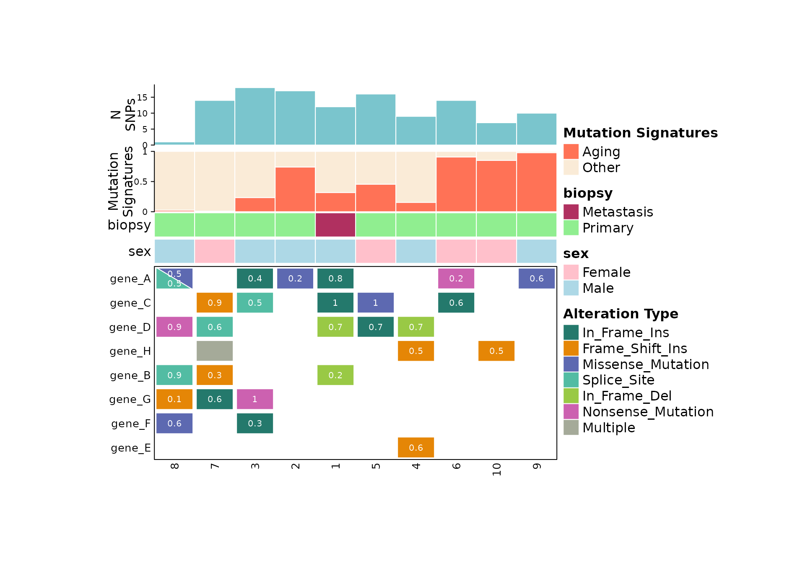

ComutR
ComutR.RmdPreparing data for comut plots
The main input to comut is a dataframe with columns found in a typical maf file. Three columns are required by comut:
- Tumor_Sample_Barcode
- Hugo_Symbol
- Variant_Classification
For more information on the maf format and column names, visit maf format
Generating mock data
set.seed(1999)
sample_ids <- as.character(1:10)
gene_names <- c("A", "B", "C", "D", "E", "F", "G", "H")
gene_names <- paste0("gene_", gene_names)
variant_types <- c("Frame_Shift_Del", "Frame_Shift_Ins", "In_Frame_Del", "In_Frame_Ins", "Missense_Mutation", "Nonsense_Mutation", "Splice_Site", "Translation_Start_Site")
maf <- expand.grid(
"Tumor_Sample_Barcode" = sample_ids,
"Hugo_Symbol" = gene_names
)
maf$Variant_Classification <- sample(variant_types,
size = nrow(maf), replace = TRUE)
# Randomly subset
input_maf <- maf %>%
dplyr::sample_frac(0.35)
# Duplicate first row twice for showing multiple
input_maf <- rbind(input_maf[rep(1, 2),], input_maf)
# Duplicate last row once for showing double annotations
input_maf <- rbind(input_maf[4,], input_maf)
input_maf[1, 3] <- "Missense_Mutation"
input_maf %>% head()## Tumor_Sample_Barcode Hugo_Symbol Variant_Classification
## 2 8 gene_A Missense_Mutation
## 1 7 gene_H In_Frame_Ins
## 1.1 7 gene_H In_Frame_Ins
## 110 7 gene_H In_Frame_Ins
## 29 8 gene_A Splice_Site
## 3 3 gene_A In_Frame_InsBasic Comut plots
comut(data = input_maf)
By default, comutR provides a colorscheme for the variant
classification, but this can be altered using the
variant_colors and variant_scheme arguments.
comut also orders the rows by frequency of alterations.
Adding metadata
Metadata can be added through the metadata argument of comut. This expects and dataframe with Tumor_Sample_Barcode and then additional columns for the metadata.
Along with metadata, you must pass the col_maps argument, which contains a named list of color maps corresponding to the columns in the metadata.
Here we have gender and biopsy site information for each sample, and we define color maps for the variables accordingly:
meta <- data.frame("Tumor_Sample_Barcode" = sample_ids)
meta$biopsy <- sample(c("Primary", "Metastasis"), size = nrow(meta), replace = TRUE)
meta$sex <- sample(c("Male", "Female"), size = nrow(meta), replace = TRUE)
# Define color mapping
sex_colors <- c(
"Male" = "lightblue",
"Female" = "pink"
)
biopsy_type_colors <- c(
"Primary" = "lightgreen",
"Metastasis" = "maroon"
)
color_maps <- list(
"sex" = sex_colors,
"biopsy" = biopsy_type_colors
)Note that patients without metadata will be colored grey.
comut(data = input_maf, metadata = meta, col_maps = color_maps)
Adding Barplots
Barplot data is formatted in a similar manner to metadata. A column
for Tumor_Sample_Barcode is required, and then columns for
the barplot values. If a stacked barplot is desired (for mutation
signatures for example) then there should be multiple columns
corresponding to the proportion of each value.
Barplots are defined within a named list of named lists. The top level name of each sublist is used as the y-axis label for the barplot. Each sublist should contain “data” containing the barplot data, “colors” containing a color map for the barplot, and “legend” a boolean for whether a legend should be created.
Note: The order of the barplot data list is the reverse of the order in which they are displayed in the plot!
signatures <- data.frame("Tumor_Sample_Barcode" = sample_ids)
signatures$Aging <- runif(nrow(meta), min = 0, max = 1)
signatures$Other <- 1 - signatures$Aging
total_snp_data <- data.frame("Tumor_Sample_Barcode" = sample_ids)
total_snp_data$n_snps <- sample(1:20, size = nrow(meta), replace = TRUE)
signature_colors <- c(
"Aging" = "coral1",
"Other" = "antiquewhite"
)
# Barplot specifications
barplot_data <- list(
"Mutation Signatures" = list(
"data" = signatures,
"colors" = signature_colors,
"legend" = TRUE
),
"N SNPs" = list(
"data" = total_snp_data,
"colors" = c("n_snps" = "cadetblue3"),
"legend" = FALSE
)
)
comut(
data = input_maf,
barplot_data = barplot_data
)
Putting all of the components together, we get something like this:
comut(
data = input_maf,
metadata = meta,
col_maps = color_maps,
barplot_data = barplot_data
)
Text Annotations
ComutR allows the user to add arbitrary text annotations to the cells of the comut plot. This can be specified as a column name that appears in the input data. Here we show adding allele fraction annotations to each mutation:
input_maf$Allele_Fraction <- round(runif(nrow(input_maf), min = 0.1, max = 1), 1)
comut(
data = input_maf,
text_annotation = "Allele_Fraction"
)
Limiting samples or features and filling missing information
If a subset of samples or features in the input data are desired, the
user can specify the ids or
features_of_interest arguments respectively.
comut will also fill in any ids or features that are not
present in the input data. This can be especially useful when one wants
to highlight a feature that is not altered in any samples.
Color schemes
By default, comut assigns colors from the vivid color scheme
to the variant classifications in order of frequency. To specify a
custom color scheme, the variant_colors argument is used.
This can be used to explicitly show variant not seen in the dataset.
comut(
data = input_maf,
ids = c("1", "3", "4", "7", "missing_sample"),
features_of_interest = c("gene_A", "gene_B", "gene_E", "gene_H", "gene_missing"),
variant_colors = c(
"In_Frame_Ins" = "lightblue",
"Frame_Shift_Ins" = "pink",
"Unseen Variant Class" = "purple",
"In_Frame_Del" = "lightgreen"
)
)
Additional Options
Comut also provide many arguments for the plot size, fontsize, and other options.
comut(
data = input_maf,
metadata = meta,
col_maps = color_maps,
barplot_data = barplot_data,
text_annotation = "Allele_Fraction",
cell_width = 0.5,
cell_height = 0.3,
anno_fontsize = 12,
legend_fontsize = 12,
add_borders = TRUE,
body_border = TRUE
# row_names_rot = 30,
# column_names_rot = 0
)
comut also takes additional variable arguments for the
call to Heatmap, so users can specify existing options like
row_names_rot, column_names_rot,
body_border etc.